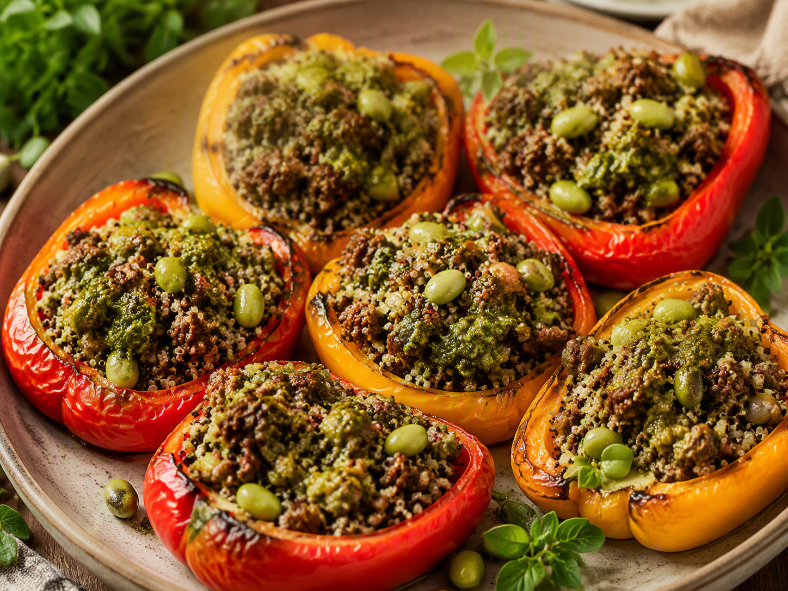

Maandag · Vlees
Gevulde paprika’s met rundergehakt, gekleurde quinoa en pesto
Gezonde gezinsmaaltijd voor drie personen: gevulde paprika’s met rundergehakt, gekleurde quinoa en pesto.

Ingrediënten
- 3 grote rode of gemengde paprika’s
- 300 g rundergehakt
- 150 g gekleurde quinoa
- 180 g ongepelde edamame, na koken circa 80 g boontjes
- 70 g groene pesto
- 1 ui, fijngesneden
- 1 teen knoflook, fijngehakt
- 1 el olijfolie
- 1 tl paprikapoeder
- Peper naar smaak
Bereiding
- Verwarm de oven voor op 200 °C. Halveer de paprika’s in de lengte, verwijder de zaadlijsten en rooster de helften 10 minuten voor.
- Kook de quinoa volgens de verpakking. Kook de edamame 5 minuten, laat iets afkoelen en haal de boontjes uit de peulen.
- Fruit ui en knoflook in olie. Voeg gehakt en paprikapoeder toe en bak het gehakt rul en gaar.
- Meng quinoa, edamame, gehakt en pesto. Vul de paprikahelften royaal.
- Bak nog 18 tot 20 minuten, totdat de paprika zacht is en de vulling goed heet.